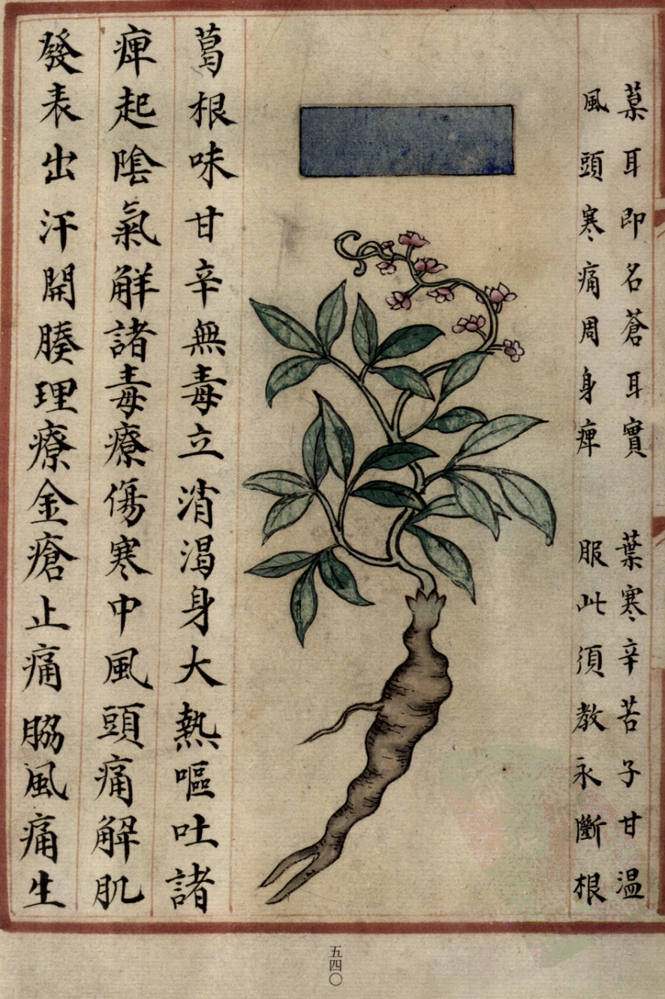
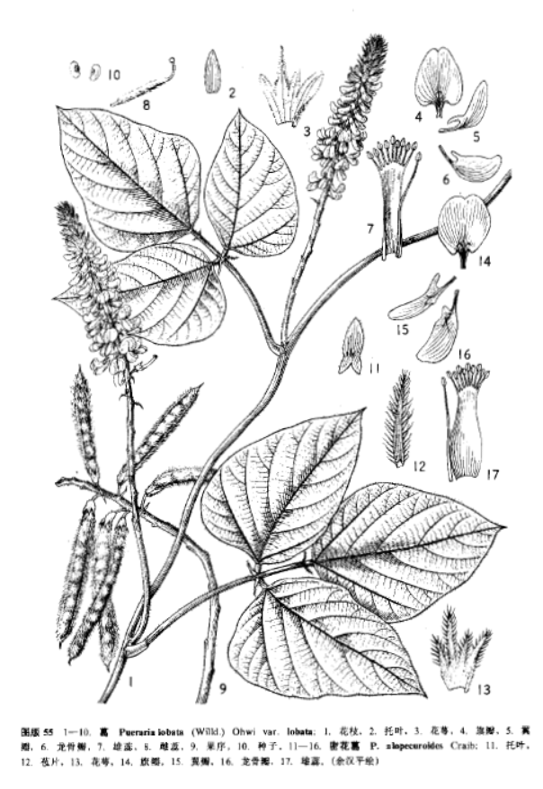

出现篇目
别名 鸡齐（《本经》）、鹿藿（《别录》）、黄斤（《别录》）
古代记载 《毛诗故训传》
葛所以为絺绤，女功之事烦辱者。（《毛传》注《葛覃》）
葛也藟也，延蔓於木之枚本而茂盛。（《毛传》注《旱麓》）
《毛诗正义》
蔓草。（《毛诗正义》疏《葛生》）
《诗集传》
葛、草名。蔓生可爲絺綌者。（《诗集传》集注《葛藟》）
《本草纲目》
《别录》曰∶葛根生汶山川谷，五月采根，曝干。
弘景曰∶即今之葛根，人皆蒸食之。当取入土深大者，破而日干之。南康、庐陵间最胜，多肉而少筋，甘美，但为药不及耳。
恭曰∶葛虽除毒，其根入土五六寸以上者，名葛 。 者颈也。服之令人吐，以有微毒也。《本经》葛谷，即是其实也。
颂曰∶今处处有之，江浙尤多。春生苗，引藤蔓，长一、二丈，紫色。叶颇似楸叶而小，色青。七月着花，粉紫色，似豌豆花，不结实。根形大如手臂，紫黑色，五月五日午时采根，曝干，以入土深者为佳，今人多作粉食。宗奭曰∶澧、鼎之间，冬月取生葛，捣烂入水中，揉出粉，澄成垛，入沸汤中良久，色如胶，其体甚韧，以蜜拌食，擦入生姜少许尤妙。又切入茶中待宾，虽甘而无益。又将生葛根煮熟，作果实卖，虔、吉州、南安军亦然。
时珍曰∶葛有野生，有家种。其蔓延长。取治可作 。其根外紫内白，长者七、八尺。其叶有三尖，如枫叶而长，面青背淡。其花成穗，累累相缀，红紫色。其荚如小黄豆荚，亦有毛。其子绿色，扁扁如盐梅子核，生嚼腥气，八、九月采之，《本经》所谓葛谷是也。唐苏恭亦言葛谷是实，而宋苏颂谓葛花不结实，误矣。其花晒干亦可炸食。
当代记载 《中国植物志》
葛（ Pueraria lobata var. lobata）， 豆科，葛属植物。粗壮藤本，长可达8米，全体被黄色长硬毛，茎基部木质，有粗厚的块状根。羽状复叶具3小叶；托叶背着，卵状长圆形，具线条；小托叶线状披针形，与小叶柄等长或较长；小叶三裂，偶尔全缘，顶生小叶宽卵形或斜卵形，长7-15（-19）厘米，宽5-12（-18）厘米，先端长渐尖，侧生小叶斜卵形，稍小，上面被淡黄色、平伏的蔬柔毛。下面较密；小叶柄被黄褐色绒毛。花期9-10月，果期11-12月。产我国南北各地，除新疆、青海及西藏外，分布几遍全国。生于山地疏或密林中。东南亚至澳大利亚亦有分布。

<补遗雷公炮制便览>

<中国植物志>